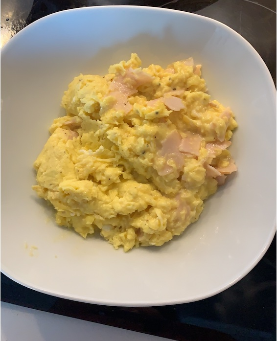

Back
Scrambled Eggs

Description
Scrambled eggs are one of the most common ways to cook eggs. Despite probably being the simplest method the cook an egg, it is one that is quite hard to perfect.
Ingredients
Makes one serving for a big boi
- 3 whole eggs
- 1 slice (30g) of your cheese of choice
- Two slices (15g) of your deli meat of choice
- 5g of butter
- Salt
Steps
- Set a pan over medium heat
- Crack and mix 3 whole eggs in a small bowl
- Add salt to egg mixture
- Once pan has heated up, add butter
- Add eggs to pan and, with a wooden spoon, mix continously until you have achieved a solid but moist consistency
- Plate and eat up!